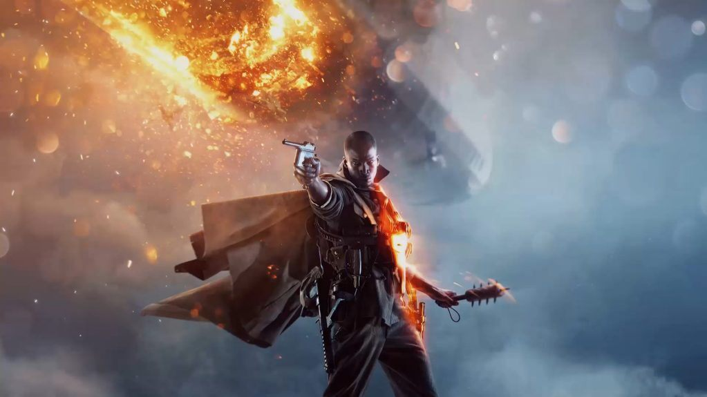
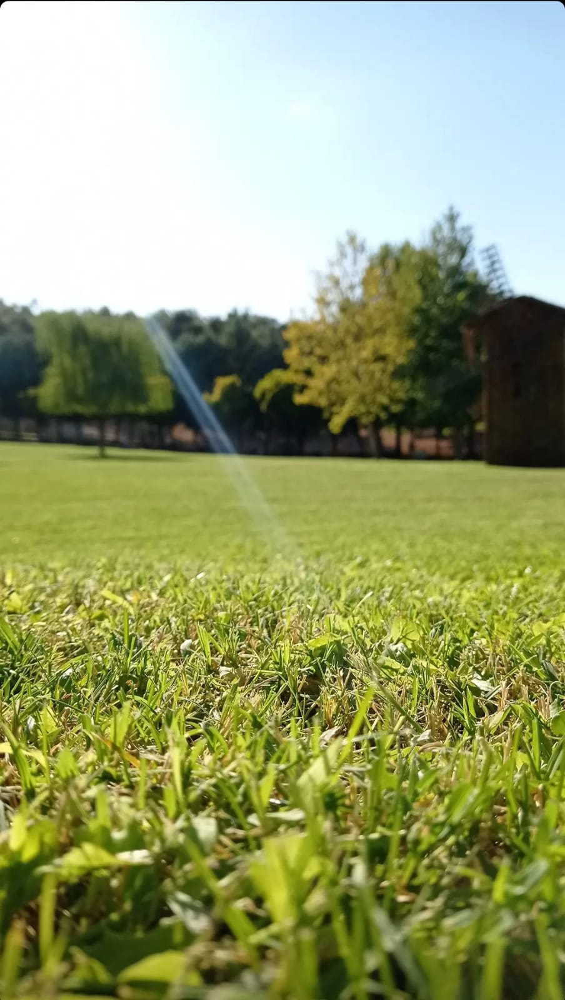
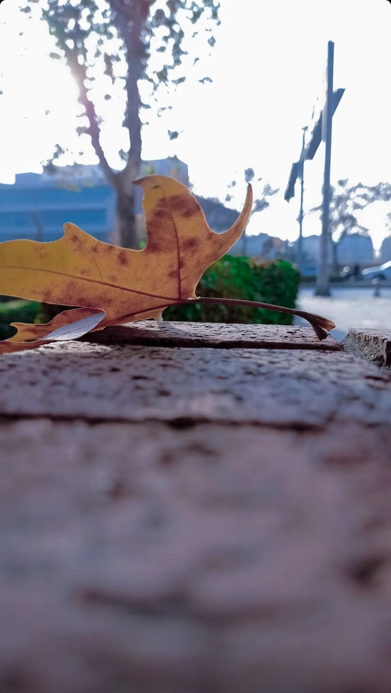

WELCOM TO MY PAGE
ÖZ GEÇMİŞİM
Benim adim Abdulkader ALOSMAN
Ben suriyelyim TÜRKİYE/Gaziantepte yaşiyorum
Gaziantep islam bilim ve teknoloji üniversitesinde okuyorum
İLGİ ALANLARIM
OYUN OYNAMAK
CALL OF DUTY
BATTLE FİELD

FOTOĞRAF ÇEKMEK
 
YUKARI ÇIK